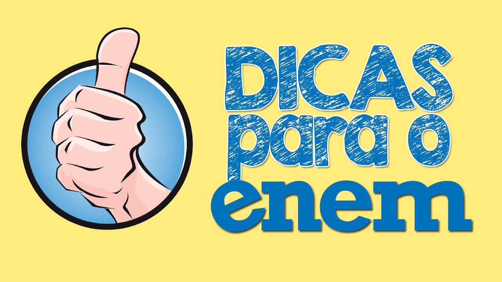

Acesso à Educação Superior
- Sisu
- Prouni
- Instituições Portuguesas
Financiamento Estudantil
- Fies
Desenvolvimento Pessoal
- Auto-avaliação
- Inserção no Mercado
Melhorias na Educação
- Estudos e Indicadores
- Aperfeiçoamento do Ensino
Nas Provas...
4 Provas Objetivas, sendo 45 questões cada
- Ciências Humanas e suas Tecnologias
- Ciências da Natureza e suas Tecnologias
- Linguagens, Códigos e suas Tecnologias
- Matemática e suas Tecnologias
1 Redação
- Texto dissertativo-argumentativo a partir de uma situação-problema (política, social ou cultural)
- 30 linhas no máximo
Novidades de 2017
- Provas em dois domingos consecutivos
- Redação no primeiro dia
- Nada de certificação
- Provas com o seu nome
- Vídeoprova em Libras
- Solicitação de tempo adicional no ato da inscrição
- Declaração de comparecimento impressa por você
- Novas regras para isenção e ausência
A Redação
O texto da redação do Enem deve ser dissertativo-argumentativo e o candidato deve apresentar uma proposta de solução para o problema proposto.
As redações com sete linhas ou menos receberão nota zero. Também serão eliminados candidatos que fugirem totalmente ao tema proposto e os que escreverem impropérios, desenhos e outras formas propositais de anulação.
O tema deste ano segue a tendência das últimas edições do Enem, que costuma abordar temas sociais. No ano passado, o tema foi Caminhos para combater a intolerância religiosa no Brasil. Violência contra a mulher, publicidade infantil, lei seca e movimento imigratório também foram abordados nos últimos anos.
As redações serão avaliadas de acordo com cinco competências: domínio da norma-padrão da língua escrita, compreensão da proposta da redação e aplicação de conceitos de diversas áreas do conhecimento para desenvolver o tema; capacidade de selecionar, relacionar, organizar e interpretar informações para defender um ponto de vista; conhecimento dos mecanismos linguísticos necessários para a construção da argumentação e elaboração de proposta de intervenção ao problema abordado, respeitando os direitos humanos.
Reforços de Segurança
Novidade neste ano, os detectores de aparelhos de ponto eletrônico de ouvido serão usados de forma experimental em alguns locais de prova. O sistema encontra os aparelhos de transmissão pelo sinal de rede móvel de banda larga, por radiofrequência de wi-fi e bluetooth.
Outras medidas já consolidadas nas demais edições do exame serão mantidas, como a coleta da impressão digital dos participantes.É permitido levar lanches para comer durante as provas, mas os alimentos industrializados, como biscoitos, salgadinhos e iogurte precisam estar com as embalagens lacradas, e todos os itens serão vistoriados antes do ingresso na sala.